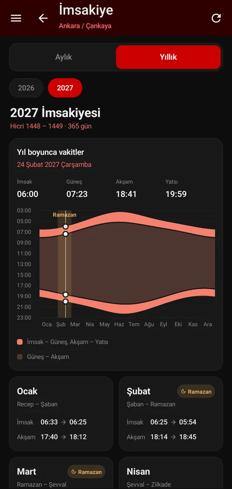
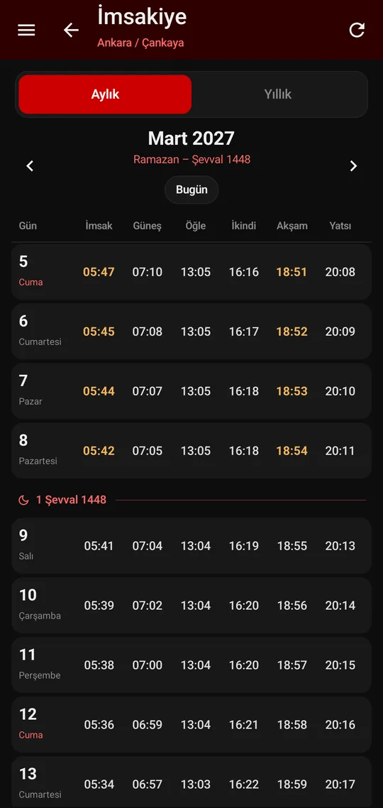
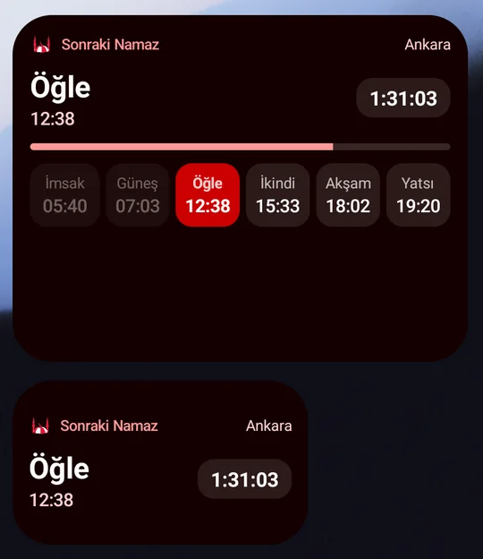
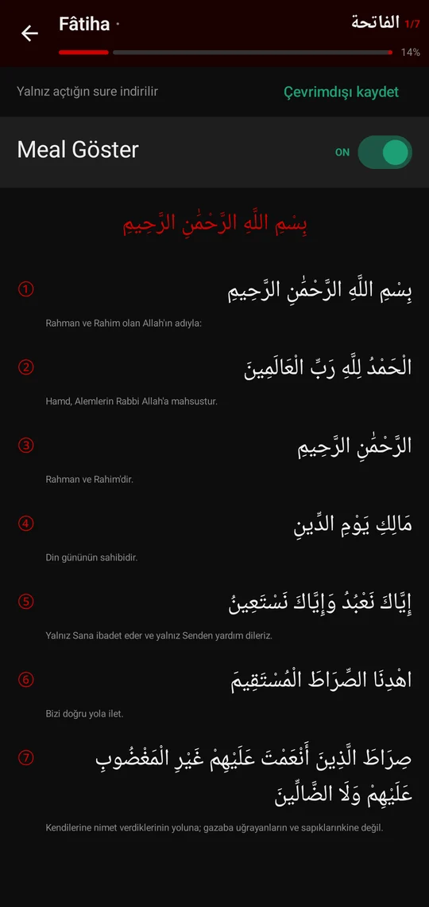
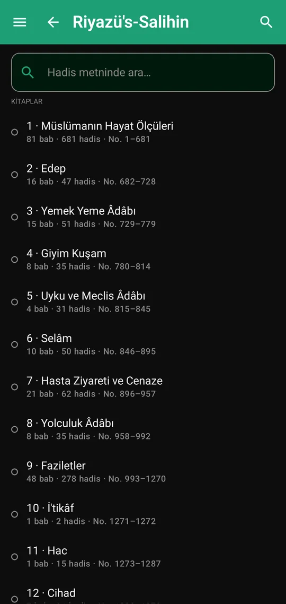

Namaz vakitleri
Diyanet'ten il ve ilçe bazlı vakitler, sonraki namaza geri sayım, “en yakın konumu kullan” seçeneği.
Yeni · Sürüm 2.5 Aylık ve yıllık imsakiye
ODTÜ Mescid; Diyanet'in ilçe bazlı vakitlerini, sonraki namaza geri sayımı, imsakiyeyi, kıbleyi, kampüs mescid haritasını, Kur'ân-ı Kerim'i ve Riyazü's-Salihin'i sade bir karanlık temada bir araya getirir.
Yeni · İmsakiye
Ana ekrandaki “İmsakiye” bağlantısından ya da menüden açılır. Vakitler hicri tarihle birlikte gelir, bir kez yüklendikten sonra internet olmadan da görüntülenir.
Günler satır satır; bugün vurgulu, cumalar işaretli, hicri ay başları ince bir ayraçla gösterilir.

Vakitlerin yıl boyunca nasıl değiştiğini gösteren grafik; parmağınızı kaydırdıkça o günün vakitleri yazar. Altında 12 ayın özeti.

Ramazan günlerinde sahurun bittiği imsak ve iftar vakti olan akşam öne çıkar; Ramazan ayları rozetle işaretlenir.
Not: İmsakiye, Diyanet'in yayımladığı tabloları gösterir. Diyanet yıl sonuna doğru bir sonraki yılın tablosunu yayımladığında içinde bulunulan yılın son haftaları geçici olarak eksik kalabilir; yayımlandığında uygulamada kendiliğinden görünür.

Ana ekran widget'ı
İki boyutta widget: sıradaki namaz, saniye saniye geri sayım ve günün altı vakti.
Özellikler
Diyanet'ten il ve ilçe bazlı vakitler, sonraki namaza geri sayım, “en yakın konumu kullan” seçeneği.
Hicri tarihli aylık tablo, yıllık grafik ve ay özetleri; çevrimdışı da açılır.
Vakit bazında ezan bildirimi, ezan öncesi hatırlatma ve durum çubuğunda kalıcı vakit özeti.
Konum ve pusula sensörüyle kıble yönü; sensörü olmayan cihazlarda kuzeye göre açı.
Kampüsteki ve yakındaki mescitler, filtreler ve yol tarifi.
114 sure, Arapça metin ve Türkçe meal, Kur'ân içinde arama, sure ve sayfa görünümü.
18 kitap ve 349 bab halinde hadisler, metin içinde arama ve isteğe bağlı günlük hadis bildirimi.
Günlük ibadet görevleri, seri takibi ve istatistikler; yaklaşan sohbetler ve takvime ekleme.
Okuma
Kur'ân-ı Kerim'de sure listesi, Arapça metin ve meal; Riyazü's-Salihin'de kitap ve bab gezintisi. Ana ekrandaki kartlar kaldığınız yeri hatırlar.


Galaxy Watch · Wear OS
Saat uygulaması telefondaki konum ve vakitleri otomatik alır. Kaydırarak Kıble, Vakitler ve Günün Hadisi ekranları arasında geçilir; kadran için kutucuk (tile) ve komplikasyon da vardır.
Kurulum
Bu sayfadaki “Android için indir” düğmesine telefonunuzdan dokunun.
Android, tarayıcınıza “bilinmeyen uygulamaları yükleme” izni vermenizi isteyebilir; bu izin yalnızca bu kurulum için gereklidir.
Ayarlar › Konum'dan il ve ilçenizi seçin ya da “en yakın konumu kullan”a dokunun.
Güncelleme: Yeni sürümü eskisinin üzerine kurmanız yeterlidir; uygulamayı silmenize gerek yoktur, ayarlarınız ve kayıtlarınız korunur.
Sürüm notları
2.5 Ekim 2026 · güncel
2.4 Ekim 2026
2.3 Ekim 2026